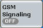
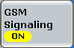
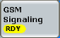
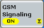

A downlink signal generator can be in the "ON", "OFF" or "RDY" state. In the default configuration, all signaling generators are switched off; no cell signals are available. The cell state is shown in the signaling control softkey.

To turn the signaling generator on or off:
Select the signaling control softkey and press ON | OFF.
Alternatively, right-click the signaling control softkey. Click ON or OFF.
When an output signal is available at the selected connector, the control softkey indicates the "ON" state:

The "RDY" state indicates that the signaling application is ready to receive a handover from another signaling application.

This state is entered when the signaling application has been selected as handover target in another signaling application and all preparations for reception of the handover have been completed. In the "RDY" state, an output signal is available or not, depending on whether both signaling applications use the same or different resources.
Depending on the signaling application and its configuration, the R&S CMW requires some time to provide the generator signal. While the signaling generator is turned on but still waiting for resource allocation, adjustment, hardware switching, a yellow sandglass symbol in the control softkey indicates the "pending" state.  The yellow symbol disappears when the signaling generator signal is available. The "pending" state is also indicated while the signaling generator is turned off but the resources have not yet been released. |